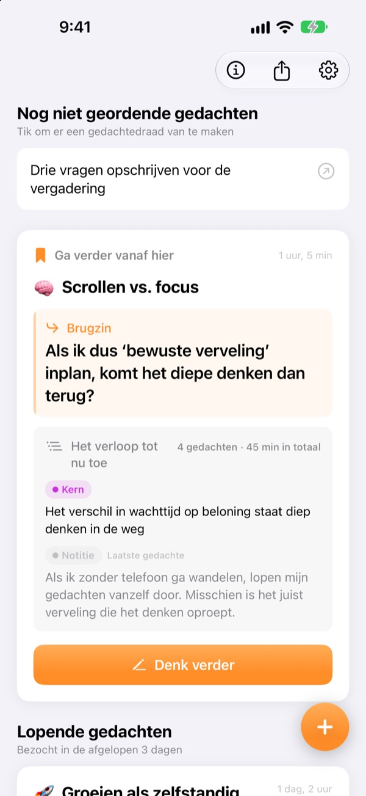
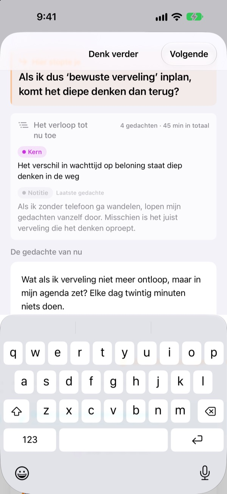
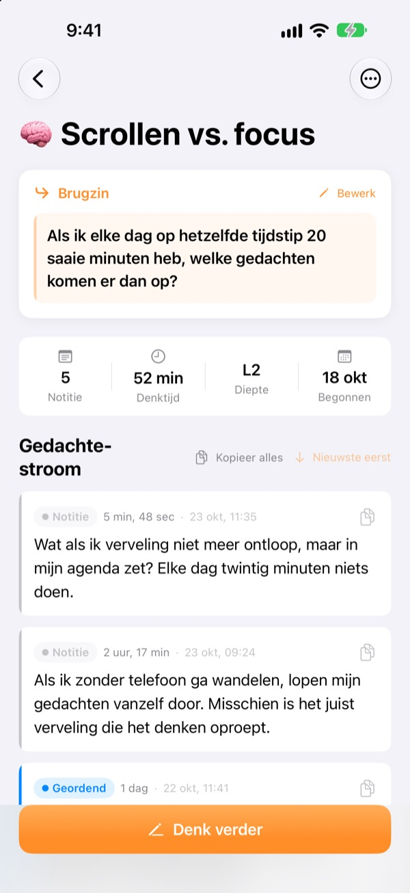
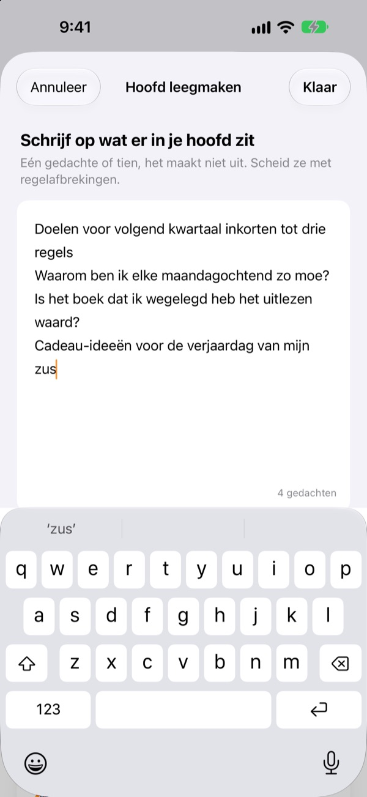

De halve gedachte van gisteren
gaat vandaag verder waar hij stopte
Als je stopt met denken, laat je één regel achter om op verder te gaan. De volgende keer dat je de app opent, staat die bovenaan.
Alle functies zijn gratis. Geen account, alles blijft op je apparaat.

Probeer een brugzin
Schrijf een gedachte en laat de zin achter waarmee je de volgende keer verdergaat. Het gaat in dezelfde volgorde als in de app.
Waar was ik ook alweer gebleven?
Je opent een notitie van vorige week en vindt een paar conclusies, maar niet de vraag die je daarna wilde uitzoeken. Dus begin je opnieuw. Met ThinkFlow schrijf je die volgende vraag op zodra je stopt, zodat je er meteen mee verdergaat als je terugkomt.
Je brugzin wacht bovenaan
Sluit een denksessie af met één regel: de vraag waarmee je verdergaat. Als je terugkomt, staan die zin, de kern tot nu toe en je laatste gedachte op één kaart. Je hoeft niets te reconstrueren.
Je ziet hem ook in een widget op het beginscherm, en terwijl je denkt loopt de tijd op het toegangsscherm en in het Dynamic Island.

Van notitie tot kern
Til elke gedachte door vier niveaus: notitie, geordend, kern en samenvatting. In één oogopslag zie je hoe rijp hij is.
Wat je hebt opgezocht of gevraagd, voeg je bij als materiaal, los van je eigen gedachten.

Eerst je hoofd leegmaken
Schrijf alles op wat door je hoofd gaat, één regel per gedachte, en kies degene waar je nu mee aan de slag wilt. Die wordt een draad, de rest wacht op het startscherm tot je erop tikt.
Gedachten die je langer dan drie dagen niet hebt aangeraakt, komen samen onder Gedachten om nieuw leven in te blazen.

In drie stappen aan de slag
- 1
Maak je hoofd leeg
Eén regel per gedachte, kies dan degene die mag groeien.
- 2
Denk verder
Voeg elk nieuw idee apart toe, dan kun je het later makkelijker verfijnen.
- 3
Laat de zin achter en sluit
De volgende keer begin je daar.
Verfijningsniveau
- Notitie
- Ruwe gedachte
- Geordend
- Eenmaal geordend
- Kern
- Alleen de kern
- Samenvatting
- Eindsamenvatting
Tik op het niveaulabel naast een gedachte om het te wijzigen. Kern en samenvattingen staan als eerste op de kaart als je terugkomt.
Je brugzin wacht bovenaan
Moet ik een brugzin schrijven?
Als je iets hebt toegevoegd wel: het scherm Denk verder sluit pas als je de volgende regel achterlaat. Heb je niets geschreven, dan sluit je het gewoon. De truc is stoppen zolang je nog iets te zeggen hebt, niet pas als je vastloopt.
Wat zijn Gedachten om nieuw leven in te blazen?
Draden die je langer dan drie dagen niet hebt geopend, worden apart verzameld op het startscherm. Zo kan ook een bijna vergeten gedachte verder vanaf zijn brugzin.
Hoe meld ik een bug of doe ik een voorstel?
Gebruik Stuur feedback in de instellingen van de app, schrijf naar het adres hieronder of open een issue op github.com/M1zz/ThinkFlow/issues. Alles is welkom.
Is echt alles gratis?
Ja. Alle functies zijn gratis, zonder advertenties en zonder account. ‘Steun de ontwikkelaar’ in de instellingen is helemaal vrijwillig en ontgrendelt niets.
Vragen of feedback? Schrijf naar leeo@kakao.com.